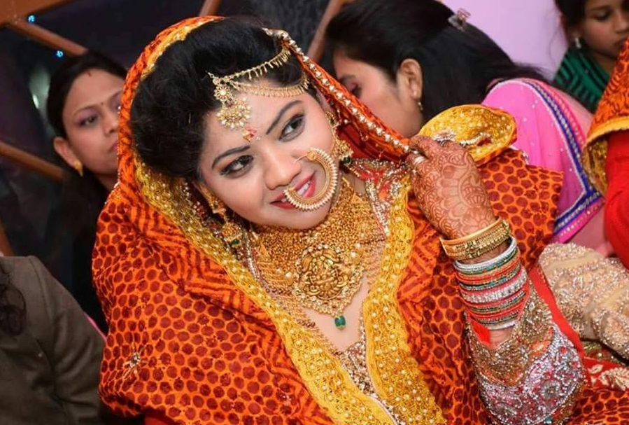

Rangwali Pichora
Rangwali Pichora is a traditional gown worn by women. It has four quadrant signs right at the centre, such as Om, swastika, goddess and conch shell. The swastikais made with flowers and leaf designs along with the regular dot structure. The gown has shiny borders with colourful jhari and lace embedded in it. Each dot on the swastika sewn on the dress has religious importance. Swastik is a symbol of God, Goddess and karma yoga with four limbs pointing towards progress. Sun is in the first house of the swastika, symbolizing the well-being and power of the family. The second quadrant represents the prosperity and well-being of close ones. The third one shows Shanka and the fourth one represents a bell, which means worship.